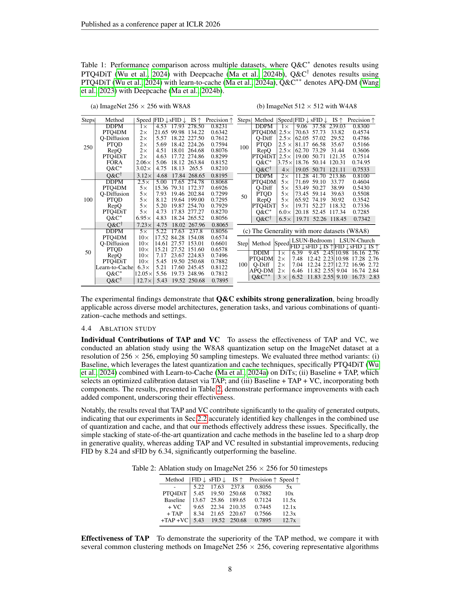
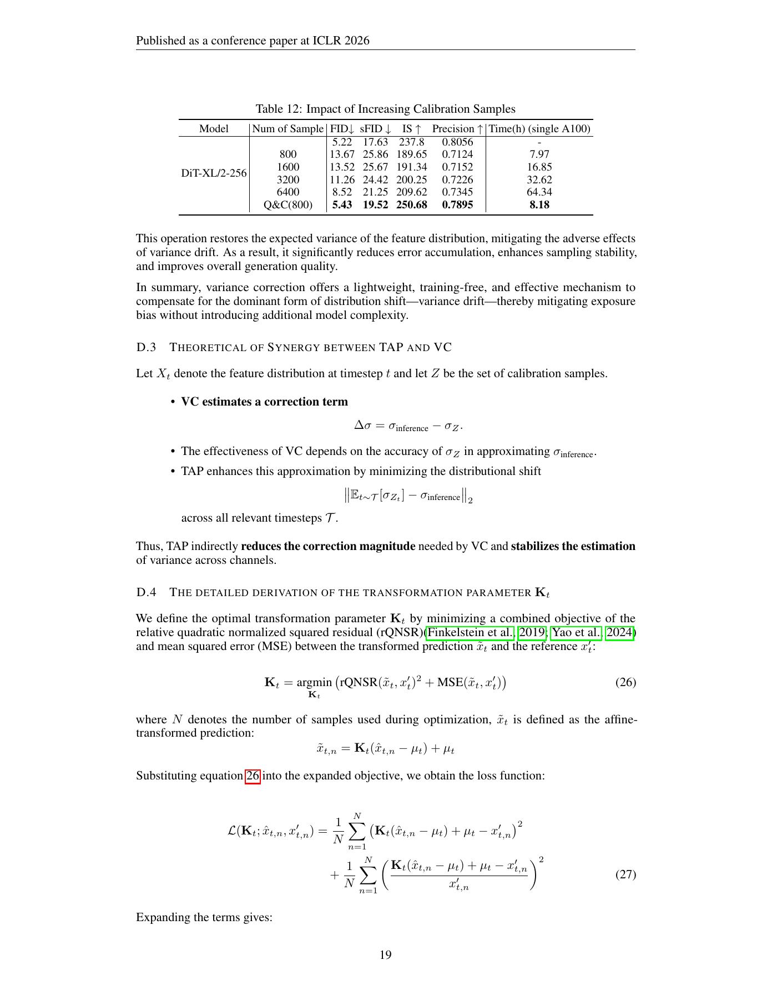

一句话结论
量化和缓存各自保持质量，不保证组合后仍保持质量。Q&C通过时间感知选样与方差补偿修复特定组合的退化；但12.7×包括减步收益，低比特端点仍明显逊于全精度，不能视作通用无损部署方案（Tables1–2、AppendixJ）。[2]
论文定位与版本
正式英文题名为 *Q&C: When Quantization Meets Cache in Efficient Generation*，作者为Xin Ding、Xin Li、Haotong Qin、Zhibo Chen，官方页码95269–95293。[1] 早期arXiv 2503.02508题名多一个Image；同一身份合并追踪，正文数字只采用ICLR正式版。[2][3] 正式DOI未核验，不能用预印本DOI替代。早期作者预告仓库本轮网页/API均404，尚未取得实现，原因未知。
问题定义
后训练量化（Post-Training Quantization, PTQ）依赖少量校准中间态；缓存（cache）复用跨步特征。当两者叠加，校准条目可能更加相似，且联合误差使推理轨迹方差偏离参考值。单模块表现和理论计算节省不足以保证组合质量（pp.2–4、Figs.1–3）。[2]
方法概述
- 时间感知并行聚类（Temporal-Aware Parallel Clustering, TAP）：结合空间余弦相似度和时间相似度，对候选中间态并行抽样、聚类，再跨簇选择有限校准样本（pp.5–6）。[2]
- 方差补偿（Variance Compensation, VC）：以校准参考轨迹计算时间步×通道缩放参数，对中心化中间态作仿射修正；无需新增梯度训练网络，但仍有参考生成与校准成本（p.6、AppendixD）。[2]
- 作用边界：这是组合误差修复，不是新采样器，也不是证明全部量化和缓存算法都可无损叠加。方差恢复不等于完整分布或语义恢复。[2]
核心实验与结果
同步数对照比最大倍率更有价值
ImageNet-256、DiT-XL/2、W8A8、50步：全精度FID5.22，单独PTQ4DiT为5.45，单独Learn-to-Cache为5.21；直接叠加后13.67，加VC为9.65，加TAP为8.34，两者为5.43。完整组合的sFID19.52仍高于全精度17.63，Precision0.7895也低于0.8056（p.8，Tables1a、2）。[2]
它支持“交互会失效、修复有效”，不支持“每个质量轴无损”。没有重复seed和区间，不把5.43相对5.45解释为统计显著优势。
低位宽与现代模型反证
- 512²/W4A8：100步FP FID9.06、Q&C†19.05；50步FP11.28、Q&C†19.71。后者与单独PTQ4DiT的19.71相同，保持量化模型质量不等于保持全精度质量（Table1b）。[2]
- FLUX.1：SVDQuant FID19.9，直接加DeepCache为23.85，再加Q&C为20.5；PixArt-Σ对应19.2→25.6→20.1，修复仍不完全（Table17）。[2]
- QAT反例：特定QAT设置FID5.67，加DeepCache8.95；不能据此排除专门联合训练的缓存感知QAT（Table5）。[2]
消融与独立单位
主实验生成10,000张256²、5,000张512²图，使用ADM评测工具。800校准样本对应中间态条目，附录给25时间步×32样本，不能当成800个独立源图像。聚类方法、空间/时间相似度、α、TAP/VC独立贡献和扩大校准集都有消融；轨迹级划分、外部调参集和污染审计不足（p.7、Tables3–4、12、15）。[2]
关键图示

图中Table1a以256²/250步为速度基准；Table1b则以512²/100步为基准。两表倍率不能直接横比。Table2的直接组合退化与TAP/VC修复均可在原页核对。[2]

Table12的Q&C800样本耗时8.18小时，不是“几分钟”；增加普通校准到6400样本耗时64.34小时，FID8.52仍未达到Q&C800的5.43。[2]
成本账与正式包冲突
- 在线：AppendixJ给A100-SXM-80GB、batch1、256²、PyTorch2.3/CUDA Graphs，称端到端测量；Table16只给相对延迟，没有绝对秒数或分项。12.7×相对250步FP16，包含减步、量化、缓存；同表50步FP为5×，归一化得2.54×，这是由表中倍率计算，不是新增实测。[2]
- 基准不一致：AppendixJ写统一250步基准，但Table1b把512²/100步标1×；Table2直接组合写11.5×，Table10同质量值Base2写12.5×。保留冲突，不静默挑更有利的数字。[2]
- 离线：Table12为单A100，基础800样本7.97h、Q&C800为8.18h；p.9“minutes”措辞与该设置不符。Table13分项未明示单位；不同配置的重新校准和参考生成成本边界待核验。[2]
- 内存：未报告完整峰值allocated/reserved memory、缓存字节或存储；80GB只是设备容量。[2]
- 内核：W6A8在AppendixC明确仅理论倍率，不能算实测；当前无可访问实现来独立核验其余低比特部署链路。[2]
局限或疑问
官方全文未提供独立真人偏好、长尾提示失败率或置信区间。ImageReward、FID等代理不能单独证明用户感知质量保持；现代模型补表也没有同操作点绝对延迟/显存。正文对DeepCache的DiT适配细节不足，不能因此把原DeepCache的U-Net证据范围改写成通用DiT结论。[2]
证据评价：正式出版、全文及关键表格已核验；组合失效与局部修复可信度高于“全任务无损/普适最高加速”的外推。代码不可得、成本口径和表间冲突保留为复现条件，而非擅自修正文献。
对当前Wiki判断的影响
在topics/diffusion-efficiency-engineering中加入同NFE的量化×缓存四格实验：先锁定模型、分辨率、CFG、采样器和质量阈值，再分离减步因子，最后核算在线延迟/峰值显存与离线校准摊销。该验收建议是综合判断，不是声称论文已完成全部控制；不创建普遍失败Claim，不升级研究阶段。
原始链接
相关页面
- topics/diffusion-efficiency-engineering
- sources/2026-04-15-deepcache
- sources/2026-04-16-post-training-quantization-on-diffusion-models
Sources
[1] https://proceedings.iclr.cc/paper_files/paper/2026/hash/999fcab97007ebef0cda9949550b4a9e-Abstract-Conference.html
[2] https://proceedings.iclr.cc/paper_files/paper/2026/file/999fcab97007ebef0cda9949550b4a9e-Paper-Conference.pdf
[3] https://arxiv.org/abs/2503.02508